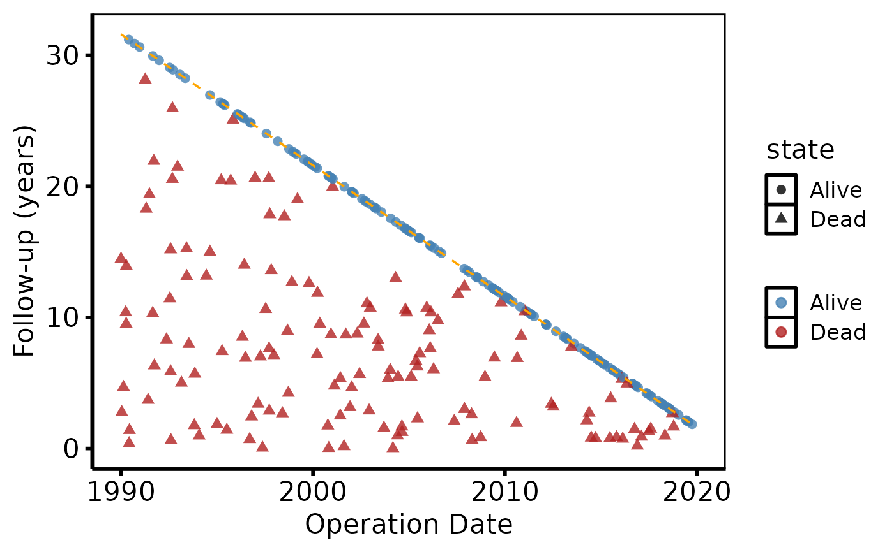
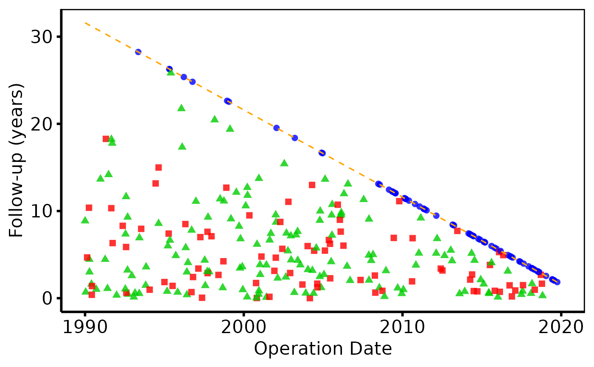

Builds a bare goodness-of-follow-up ggplot2 object from an
hv_followup data object. Each patient appears as a point
at their operation year (x) and total follow-up time (y); a vertical
segment drops from the point to indicate their current state. An orange
diagonal reference line shows the maximum possible follow-up for patients
enrolled at each year.
Arguments
- x
An
hv_followupobject.- type
Which panel to produce:
"followup"(default, death states) or"event"(requiresevent_colto have been supplied tohv_followup).- alpha
Point/segment transparency in \([0,1]\). Default
0.8.- diagonal_color
Colour of the diagonal reference line. Default
"orange".- diagonal_linetype
Linetype for the diagonal. Default
"dashed".- diagonal_linewidth
Linewidth for the diagonal. Default
0.6.- ...
Ignored; present for S3 consistency.
Value
A bare ggplot object.
Examples
dta <- sample_goodness_followup_data()
gf <- hv_followup(dta, event_col = "ev_event",
event_time_col = "iv_event")
# Death panel
plot(gf) +
ggplot2::scale_color_manual(
values = c("Alive" = "steelblue", "Dead" = "firebrick"),
name = NULL
) +
ggplot2::labs(x = "Operation Date", y = "Follow-up (years)") +
hv_theme("poster")

# Event panel
plot(gf, type = "event") +
ggplot2::scale_color_manual(
values = c("No event" = "blue", "Non-fatal event" = "green3",
"Death" = "red"),
name = NULL
) +
ggplot2::labs(x = "Operation Date", y = "Follow-up (years)") +
hv_theme("poster")
